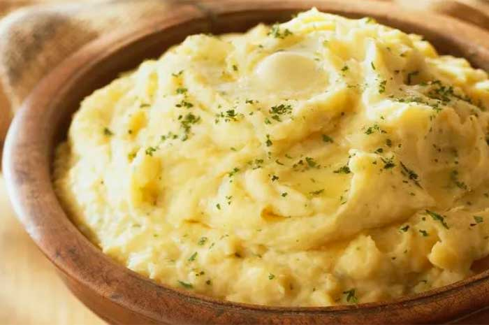

Puré de papas

Description
This is definitely one of the most popular options to accompany any dish in Argentina.
It is a very simple recipe, but if you know some tricks it can go from 'meh' to 'wow' instantly.
Ingredients
- 4 medium sized potatoes
- 50 gr. of butter
- 100 cc. of milk
- 2 garlic cloves
- a pinch of nutmeg
- a pinch of salt
Steps
- Peel and cut the potatoes in regular dices. Keep in mind that the boiling time will depend of the dice's size.
- Boil the potatoes dices and the garlic cloves in water with salt.
- Once the potato is soft, turn off the stove and remove most of the water.
- Add the nutmeg, the butter and the milk and smash everything with a potato masher (or, failing that, a fork)
- If it gets too liquid turn on the stove again for a little while.
- Once you reach the consistency you like it is ready to eat!
- Now you have the perfect accompaniment for a great milanesa
- Optional: You can add some cheese to the mix if you like
- Optional 2: If you prefer a chewy consistency you should use a mixer intead of a potato masher
Menu